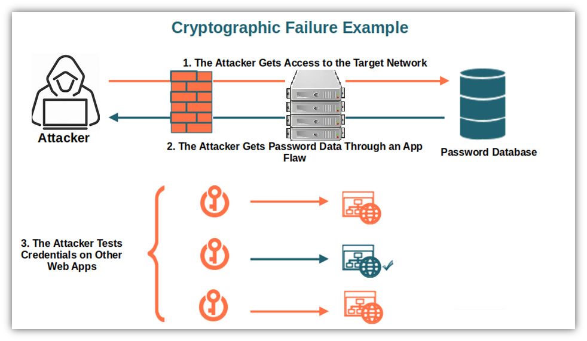
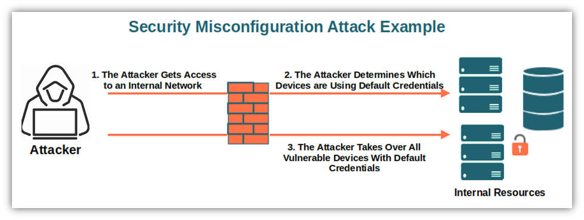
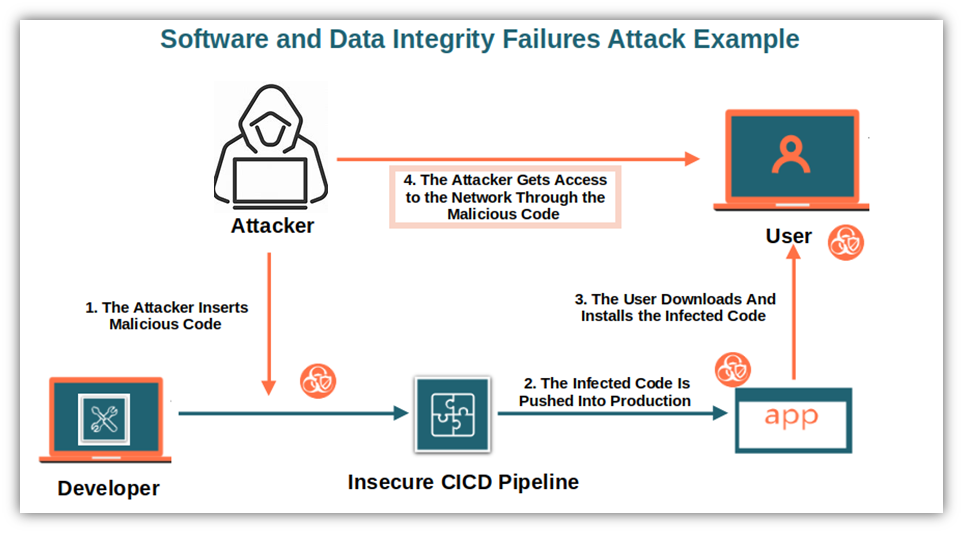

¿Qué es OWASP?
El Open Web Application Security Project (OWASP) es una fundación sin fines de lucro que trabaja para mejorar la seguridad del software. OWASP ofrece herramientas, documentos, foros y capítulos locales gratuitos que fomentan la seguridad en las aplicaciones.
¿Qué es OWASP Top 10?
El OWASP Top 10 es un estándar de concientización sobre la seguridad en aplicaciones web. Representa una amplia consenso sobre los riesgos de seguridad más críticos para las aplicaciones web. Publicado por primera vez en 2003, y actualizado regularmente, proporciona un enfoque prioritario para los desarrolladores y profesionales de seguridad.
¿Por qué es importante?
El OWASP Top 10 es esencial porque ayuda a los desarrolladores y organizaciones a identificar y mitigar los riesgos de seguridad más significativos. Implementar las prácticas recomendadas por OWASP puede prevenir muchas de las vulnerabilidades más comunes que podrían ser explotadas por los atacantes.
¿Para quién es importante?
El OWASP Top 10 es importante para desarrolladores de software, profesionales de seguridad, auditores, gerentes de proyectos y cualquier persona involucrada en el ciclo de vida de desarrollo de software. Proporciona una guía clara y concisa para asegurar aplicaciones desde el diseño hasta la implementación y mantenimiento.
A1: Control de Acceso Roto
El control de acceso roto ocurre cuando los usuarios pueden actuar fuera de sus permisos previstos. Esto puede resultar en el acceso a datos sensibles o la modificación de información de otros usuarios.
Código Correcto:
if (user.isAuthenticated && user.hasPermission("viewPage")) {
// Permitir el acceso
}Código Incorrecto:
if ("admin" in request.GET) {
// Permitir el acceso
}Buenas Prácticas:
Verificar siempre la autenticación y autorización de los usuarios antes de permitir el acceso a recursos sensibles.
Consecuencias de No Cumplir:
Acceso no autorizado a datos o funcionalidades, lo que puede resultar en violaciones de seguridad y pérdida de datos.
Diagrama del Ataque:

A2: Fallos Criptográficos
Los fallos criptográficos ocurren cuando los datos sensibles no se protegen adecuadamente, lo que puede llevar a la exposición de información confidencial.
Código Correcto:
const encryptedData = encrypt(data, "AES-256");Código Incorrecto:
const encryptedData = encrypt(data, "DES");Buenas Prácticas:
Usar algoritmos criptográficos fuertes y actualizados, y evitar algoritmos obsoletos y débiles.
Consecuencias de No Cumplir:
Exposición de datos sensibles y posible robo o manipulación de información.
Diagrama del Ataque:
A3: Inyección
La inyección ocurre cuando los datos no confiables se envían a un intérprete como parte de un comando o consulta. Los datos maliciosos pueden engañar al intérprete para ejecutar comandos no intencionados o acceder a datos sin la autorización adecuada.
Código Correcto:
const query = "SELECT * FROM users WHERE username = ? AND password = ?";Código Incorrecto:
const query = `SELECT * FROM users WHERE username = "${username}" AND password = "${password}"`;Buenas Prácticas:
Usar consultas preparadas y procedimientos almacenados para evitar la inyección SQL.
Consecuencias de No Cumplir:
Compromiso de la base de datos, pérdida o corrupción de datos, y posibles violaciones de seguridad.
Diagrama del Ataque:
A4: Diseño Inseguro
El diseño inseguro se refiere a la ausencia de controles de seguridad en la fase de diseño, lo que permite que los atacantes exploten vulnerabilidades no mitigadas.
Código Correcto:
if (loginAttempts > MAX_ATTEMPTS) {
// Bloquear la cuenta temporalmente
}Código Incorrecto:
// Permitir intentos ilimitados de inicio de sesiónBuenas Prácticas:
Implementar controles de seguridad desde la fase de diseño, como la limitación de intentos de inicio de sesión.
Consecuencias de No Cumplir:
Mayor vulnerabilidad a ataques de fuerza bruta y compromisos de cuentas de usuario.
Diagrama del Ataque:

A5: Configuración de Seguridad Incorrecta
La configuración de seguridad incorrecta puede permitir que los atacantes exploten configuraciones predeterminadas inseguras, configuraciones incompletas o abiertas.
Código Correcto:
// Cambiar configuraciones predeterminadas y aplicar configuraciones mínimas de seguridadCódigo Incorrecto:
// Mantener configuraciones predeterminadasBuenas Prácticas:
Revisar y modificar las configuraciones predeterminadas para asegurar que sean seguras, y seguir las guías de seguridad recomendadas.
Consecuencias de No Cumplir:
Acceso no autorizado y posible exposición de información sensible.
Diagrama del Ataque:
A6: Componentes Vulnerables y Desactualizados
El uso de componentes vulnerables y desactualizados puede permitir a los atacantes explotar vulnerabilidades conocidas en esas bibliotecas y frameworks.
Código Correcto:
// Actualizar regularmente todas las bibliotecas y componentes de softwareCódigo Incorrecto:
// Ignorar las actualizaciones de software y bibliotecasBuenas Prácticas:
Mantener actualizado todo el software y las bibliotecas utilizadas, y monitorizar continuamente las vulnerabilidades conocidas.
Consecuencias de No Cumplir:
Mayor riesgo de explotación de vulnerabilidades y compromisos de seguridad.
Diagrama del Ataque:

A7: Fallos de Identificación y Autenticación
Los fallos de identificación y autenticación permiten a los atacantes comprometer credenciales, asumir la identidad de otros usuarios y acceder a datos y sistemas sensibles.
Código Correcto:
// Implementar autenticación multifactor (MFA) para todas las cuentas de usuarioCódigo Incorrecto:
// Permitir contraseñas débiles o predeciblesBuenas Prácticas:
Requerir contraseñas fuertes y complejas, e implementar autenticación multifactor para mayor seguridad.
Consecuencias de No Cumplir:
Compromiso de cuentas de usuario y acceso no autorizado a sistemas y datos sensibles.
Diagrama del Ataque:

A8: Fallos de Integridad de Software y Datos
Los fallos de integridad de software y datos ocurren cuando los programas y las infraestructuras no protegen contra cambios no autorizados. Esto puede llevar a la ejecución de código malicioso o la alteración de datos.
Código Correcto:
const hash = crypto.createHash("sha256").update(packageData).digest("hex");Código Incorrecto:
// No verificar la integridad de los paquetesBuenas Prácticas:
Verificar siempre la integridad de los paquetes y bibliotecas antes de su implementación.
Consecuencias de No Cumplir:
Riesgo de manipulación de datos y ejecución de código malicioso.
Diagrama del Ataque:
A9: Fallos en el Registro y Monitoreo de Seguridad
Los fallos en el registro y monitoreo de seguridad permiten a los atacantes explotar sistemas sin ser detectados, retrasando la respuesta a incidentes.
Código Correcto:
// Implementar registro y monitoreo continuo de eventos de seguridad críticosCódigo Incorrecto:
// No registrar o monitorizar eventos críticos de seguridadBuenas Prácticas:
Configurar sistemas de registro y monitoreo que alerten sobre actividades sospechosas en tiempo real.
Consecuencias de No Cumplir:
Mayor riesgo de violaciones de seguridad no detectadas y retraso en la respuesta a incidentes.
Diagrama del Ataque:

A10: Falsificación de Solicitudes del Lado del Servidor (SSRF)
La falsificación de solicitudes del lado del servidor (SSRF) ocurre cuando un atacante puede hacer que el servidor realice solicitudes no autorizadas a servicios internos o externos.
Código Correcto:
if (isValidUrl(requestedUrl)) {
// Permitir solicitud
}Código Incorrecto:
fetch(requestedUrl);Buenas Prácticas:
Validar y filtrar todas las URLs y direcciones IP permitidas en las solicitudes del servidor.
Consecuencias de No Cumplir:
Riesgo de acceso no autorizado a sistemas internos y posible explotación de servicios internos.
Diagrama del Ataque: